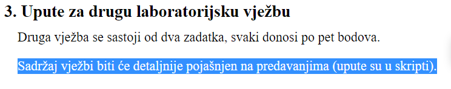

nakon “Komunikacija između procesa” poglavlja se obrađivalo još samo to gradivo iz skripte “Ulazno-izlazne naprave”?
[obrisani korisnik] “samo”
steker u mojoj glavi su to 2 lekcije od 6 stranica, što ne znam ne može mi nauditi - also sjetio sam se da je još i virtualizacija
Jel treci blic bio planiran u 10:15 i onda ga jucer Golub premjestio u 9:15 ili sam ja pobrkao?
Vonj dap, promjenio je
Vonj Znao sam da nisam lud, ali popusio ga jesam…
Moze li netko slikati zadatke koje je Golub rjesavao zadnji sat?
jel ima netko napisane te zadatke koje je rjesavao na ploci?
anci https://www.fer.unizg.hr/_download/repository/NOS_aud_zad_10.1.pdf msm da su to ove auditorne
čakijale ahhh, nema bolje nego upisat diplomski pa napamet štrebat 20 naredbi jezika C, jebemu sve
Dragi prijatelj strojnog učenja bit će šore, jebeš mi mater ako neće
Dragi prijatelj strojnog učenja gledaj na to kao bitne unix syscalls a ne ucenje c apija napamet i bude lakse
jel završena cijela skripta Ulazno-izlazne naprave? ako nije do kud se doslo?
Me
KiflaKiflic
Jos treba dovrsiti 6. cjelinu i mooozda dio pripreme za labos.
Jel prosao jelenkovic cijelu skriptu ili sutra jos odraduje par poglavlja?
Dragi prijatelj strojnog učenja Jel napravio ovo?
Sadržaj vježbi biti će detaljnije pojašnjen na predavanjima (upute su u skripti).
samo_vagabundo kao što rekoh, dio je napravio, nisam siguran jel sve
Može li netko tko je bio u četvrtak 09.12. na predavanju ukratko napisati što treba raditi u ovome labosu, ako je prof išta pričao na predavanju za to?
 Jel govorio išta iko na predavanju o ovom labosu